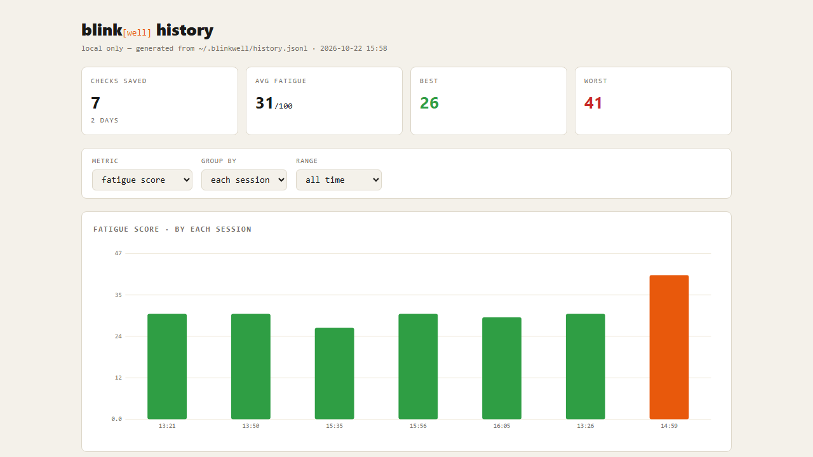

~30 fps, held in memory — never written to disk
Google MediaPipe: 478 3D landmarks per frame, on-device
head pose · lighting · fps · motion — bad frames don't count
lid-ratio state machine → complete vs partial blinks, PERCLOS
one explainable 0–100 vs your own baseline
/// Quality gates (initial values, tune with A5 eval). pub const HEAD_POSE_DEG: f64 = 20.0; // |yaw| or |pitch| → 'headPose' pub const FACE_LUMA_MIN: f64 = 45.0; // darker face → 'dark' pub const PROM_START: f64 = 0.3; // open a blink event when c − rest > this pub const PROM_END: f64 = 0.08; // close it when c − rest < this pub const PEAK_COMPLETE: f64 = 0.8; // peak c for a complete blink

blinkwell report — score trends & session history, generated locally. Opens in your browser; nothing is uploaded.